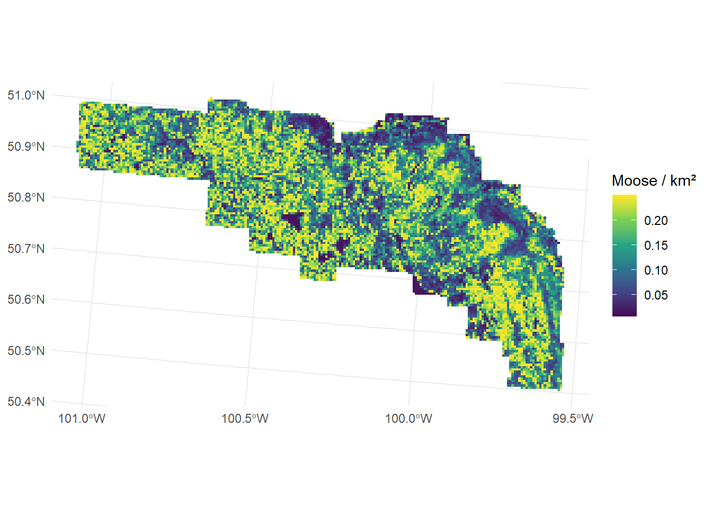
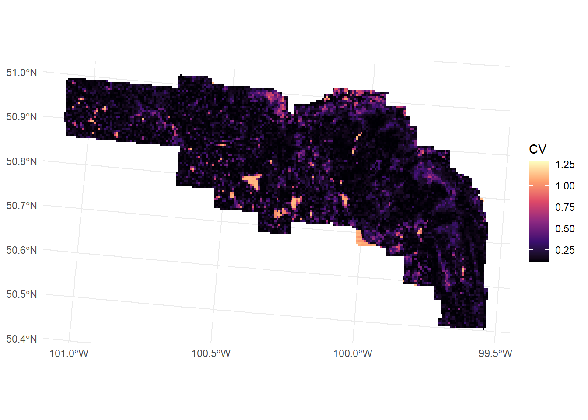
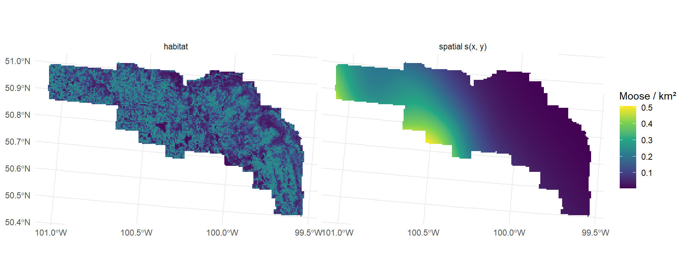

library(here)
library(dsm)
library(sf)
library(ggplot2)Estimating abundance and its uncertainty
Introduction
With a density surface model for each species, we can predict abundance in every cell of the prediction grid, sum the cells to get the total for the study area, and estimate how uncertain those numbers are. This article covers those steps for the RMNP survey and produces the moose density surface that is used later to simulate new survey designs.
Prerequisites
These articles were built with a fork of dsm (remotes::install_github("hambrecht/dsm")) that includes speed improvements to dsm_var_gam(). The CRAN version gives the same results (see Packages).
We load the prediction grid from Adding covariates and building a prediction grid and the fitted models from Fitting a density surface model.
model_data <- readRDS(here("workflow", "outputs", "model_data.rds"))
list2env(model_data, envir = environment())<environment: R_GlobalEnv>models <- readRDS(here("workflow", "outputs", "dsm_models.rds"))Registered S3 methods overwritten by 'Distance':
method from
predict.fake_ddf dsm
print.fake_ddf dsm
print.summary.fake_ddf dsm
summary.fake_ddf dsm list2env(models, envir = environment())<environment: R_GlobalEnv>pred_df <- st_drop_geometry(pred)
area_km2 <- sum(pred_df$area) / 1e6
area_km2[1] 3053.5Abundance estimation
predict() returns the expected number of animals in each cell. The cell area is passed as the offset, so predictions are in animals per cell rather than per unit of effort.
dsm_moose <- dsm_species$Moose
pred$N_moose <- predict(dsm_moose, pred_df, off.set = pred_df$area)
sum(pred$N_moose)[1] 446.2028Dividing by cell area in km² gives density, which is easier to compare between studies.
pred$D_moose <- pred$N_moose / (pred_df$area / 1e6)
ggplot(pred) +
geom_sf(aes(fill = D_moose), colour = NA) +
scale_fill_viridis_c(name = "Moose / km²") +
theme_minimal()
Variance estimation
The uncertainty in abundance comes from both stages of the model: the detection function and the density surface. The dsm package offers two ways to combine them.
- Variance propagation (
dsm_var_prop()) refits the GAM with the detection function’s uncertainty included (Bravington et al. 2021). It requires thecountresponse, which in turn requires detection covariates that are constant within a segment, such as weather or observer. - The delta method (
dsm_var_gam()) estimates the GAM variance and adds the detection function’s coefficient of variation (CV), assuming the two are independent: \(\text{CV}_\text{total}^2 = \text{CV}_\text{GAM}^2 + \text{CV}_\text{detection}^2\).
Our detection covariates, species and the canopy cover at each sighting, vary between animals within the same segment. We therefore use the abundance.est response and the delta method.
var_moose <- dsm_var_gam(dsm_moose, pred.data = pred_df, off.set = pred_df$area)
summary(var_moose)Summary of uncertainty in a density surface model calculated
analytically for GAM, with delta method
Approximate asymptotic confidence interval:
2.5% Mean 97.5%
363.7005 446.2028 547.4201
(Using log-Normal approximation)
Point estimate : 446.2028
CV of detection function : 0.06172208
CV from GAM : 0.0844
Total standard error : 46.67007
Total coefficient of variation : 0.1046 For a map of uncertainty we need the variance of each cell separately, so we split the grid into one data frame per cell. The per-cell values include only the GAM uncertainty. The map therefore shows where uncertainty from the density surface is largest.
var_cells <- dsm_var_gam(dsm_moose, pred.data = split(pred_df, seq_len(nrow(pred_df))),
off.set = pred_df$area)
pred$CV_moose <- sqrt(var_cells$pred.var) / pred$N_mooseggplot(pred) +
geom_sf(aes(fill = CV_moose), colour = NA) +
scale_fill_viridis_c(name = "CV", option = "magma") +
theme_minimal()
Abundance of all species
The same steps give totals for every species. We report the estimate, its standard error and coefficient of variation, and a 95% confidence interval based on a log-normal distribution, which keeps the lower limit above zero.
abundance_row <- function(species, model) {
s <- summary(dsm_var_gam(model, pred.data = pred_df, off.set = pred_df$area))
N <- s$pred.est
cv <- s$cv
C <- exp(qnorm(0.975) * sqrt(log(1 + cv^2)))
rhs <- sub(" + offset(off.set)", "", deparse(formula(model)[[3]]), fixed = TRUE)
data.frame(Species = species, Model = rhs,
N = round(N), Density_km2 = round(N / area_km2, 3),
SE = round(s$se), CV = round(cv, 3),
Lower95 = round(N / C), Upper95 = round(N * C))
}
abundance <- do.call(rbind, Map(abundance_row, names(dsm_species), dsm_species))
abundance Species Model N Density_km2 SE CV Lower95
Moose Moose s(zmax, bs = "ts", k = 5) 446 0.146 47 0.105 364
Deer Deer s(zmax, bs = "ts", k = 5) 535 0.175 66 0.124 419
Elk Elk 1 225 0.074 44 0.194 155
Bison Bison 1 62 0.020 38 0.612 20
Wolf Wolf 1 30 0.010 18 0.614 10
Upper95
Moose 547
Deer 681
Elk 329
Bison 187
Wolf 90Habitat or space?
How much do the habitat covariates change the answer? We compare the moose habitat model with the spatial model s(x, y) from the previous article.
pred$N_moose_xy <- predict(dsm_xy, pred_df, off.set = pred_df$area)
s_xy <- summary(dsm_var_gam(dsm_xy, pred.data = pred_df, off.set = pred_df$area))
data.frame(Model = c("habitat", "spatial s(x, y)"),
N = round(c(summary(var_moose)$pred.est, s_xy$pred.est)),
CV = round(c(summary(var_moose)$cv, s_xy$cv), 3)) Model N CV
1 habitat 446 0.105
2 spatial s(x, y) 379 0.105maps <- rbind(
data.frame(model = "habitat", D = pred$D_moose, geometry = pred$geometry),
data.frame(model = "spatial s(x, y)", D = pred$N_moose_xy / (pred_df$area / 1e6),
geometry = pred$geometry)
) |> st_as_sf()
ggplot(maps) +
geom_sf(aes(fill = D), colour = NA) +
facet_wrap(~model) +
scale_fill_viridis_c(name = "Moose / km²") +
theme_minimal()
The spatial model reproduces where moose were seen; the habitat model predicts from the forest structure everywhere in the park. The two models have similar precision but differ in their totals, which shows that the choice of covariates matters for the estimate, not only for the map. Neither model explains much deviance, so this difference is itself uncertain. The habitat model has the advantage that it can be transferred to years or areas without survey data, as long as the covariates stay within the sampled range (see Extrapolation).
Saving
The moose density surface is the starting point for simulating survey designs.
saveRDS(pred[, c("x", "y", "area", "N_moose", "D_moose", "CV_moose")],
here("workflow", "outputs", "moose_density.rds"))
write.csv(abundance, here("workflow", "outputs", "abundance.csv"), row.names = FALSE)References
Bravington, Mark V., David L. Miller, and Sharon L. Hedley. 2021. “Variance Propagation for Density Surface Models.” Journal of Agricultural, Biological and Environmental Statistics 26: 306–23. https://doi.org/10.1007/s13253-021-00438-2.